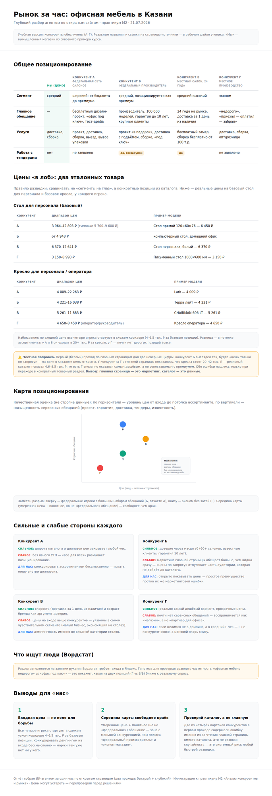

Разбор 3–5 конкурентов: сравнение цен по конкретным товарам, карта позиционирования, сильные/слабые стороны каждого и выводы, из которых следуют действия — а не общие фразы «рынок конкурентный».
До сих пор агент работал только с твоими файлами. В этом модуле он читает чужие сайты. Разница с обычным «погуглить конкурентов самому» — глубина и структура: агент проходит по каждому одинаковым набором вопросов и сводит всё в одну картину, вместо разрозненных вкладок в браузере.
Список 3–5 конкурентов (названия + сайты) — см. «Что подготовить к курсу», п. 5. Нет списка — попроси агента найти игроков по нише и городу веб-поиском, но проверь, что он нашёл действительно конкурентов.
Начни с общей разведки по каждому:
Изучи сайт [конкурент]: что продают, в каком ценовом сегменте, на что делают упор в подаче, какие услуги обещают. Каждый факт — со ссылкой на страницу.
Это даёт общую картину за 15 минут — но не более того. Главная страница — маркетинг: она может сказать «цены по запросу», хотя в каталоге они открыты, или показать премиум-витрину, из-за которой весь бренд покажется дороже, чем есть. Разведку по одной странице нельзя считать законченной.
Выбери 1–2 товара, которые есть у всех, и попроси агента зайти в конкретный раздел каталога:
Зайди в каталог каждого конкурента в раздел «столы для персонала» (или аналогичный) и выпиши 5–8 моделей с ценами. То же самое для «офисные кресла». Мне нужен реальный диапазон цен, а не общее впечатление от главной страницы.
Результат на учебной нише (офисная мебель, Казань — четыре реальных игрока, в публичной версии обезличены):

Полный разбор: таблица позиционирования → реальные цены по каталогу → карта позиционирования → сильные/слабые стороны каждого → выводы.
Открыть отчёт целиком: rynok-za-chas.html
На нашем прогоне глубокий проход перевернул два вывода из шага 1: конкурент, который на главной странице выглядел так, будто прячет цены, — в каталоге показал их открыто. А тот, кто по беглому впечатлению казался премиальным по креслам, в реальном разделе оказался вдвое дешевле остальных.
Учебный момент. Ошибка нашлась не потому, что агент «плохо считал», а потому что первый проход опирался на маркетинговый текст, а не на данные каталога. Правило модуля: для сравнения цен — только конкретные товарные страницы, не витрина.
Когда данные по ценам и обещаниям собраны, попроси визуализировать расстановку сил:
Собери карту позиционирования: по одной оси — уровень цен (от входа до потолка ассортимента), по другой — насыщенность сервисных обещаний. Расставь всех конкурентов и нас, и отметь, есть ли пустая зона.
Это не строгие данные, а качественная оценка — но именно она показывает, где рынок уже «занят» насмерть, а где просвет. На учебной нише пустой оказалась середина: умеренная цена плюс понятное (но не «федеральное») обещание.
Для каждого конкурента сформулируй: одно сильное место, одно слабое место, и что это значит конкретно для нас — в чём с ним не нужно тягаться, а в чём есть шанс.
Требуй именно «что это значит для нас» — иначе получится нейтральный список фактов без выводов.
Агент прочитал, что конкуренты предлагают. Вордстат покажет, что люди ищут. Зайди в wordstat.yandex.ru (нужен вход в Яндекс), сними частотности по 5–7 запросам ниши и отдай агенту список: «вот частотности — какую из двух позиций конкурентов это подтверждает?»
Собери всё в один HTML-отчёт (таблица позиционирования → цены в лоб → карта → сильные/слабые стороны → спрос → три вывода с конкретными следствиями) и пройдись глазами по цифрам ещё раз, прежде чем считать готовым.
| Симптом | Причина | Решение |
|---|---|---|
| Цены в отчёте не сходятся с сайтом | Взяты с главной страницы или устаревшей акции | Сравнивай по конкретным разделам каталога, не по витрине |
| Карта позиционирования — просто красивая картинка без выводов | Не спросил, где пустая зона | Явно попроси: «отметь пустую зону» |
| Сильные/слабые стороны — общие фразы («хороший сервис») | Запрос без «что это значит для нас» | Требуй конкретное следствие в каждом пункте |
| Агент «зашёл» туда, куда не надо | Просьба достать закрытые цены/каталоги | Читаем только открытые страницы. Не обходим пароли, не притворяемся покупателем |
Повтори весь разбор на своей реальной нише: свои 3–5 конкурентов, минимум один товар для сравнения «в лоб» по каталогу (не по главной странице), своя карта позиционирования. Покажи отчёт человеку, который знает твой рынок, — и запиши, с чем он не согласился.
Первый (быстрый) проход по учебной нише дал ошибку сразу в двух карточках из четырёх — и обе нашлись только при переходе от главной страницы к конкретному разделу каталога. Одна ошибка выставляла конкурента дороже, чем он есть (кресла оказались вдвое дешевле реальной цены), другая — скрывала открытые цены за маркетинговым «цены по запросу» с главной. Мораль: беглая разведка — это черновик, а не отчёт. Разница между «прочитал главную» и «прочитал каталог» — это разница между гипотезой и данными.